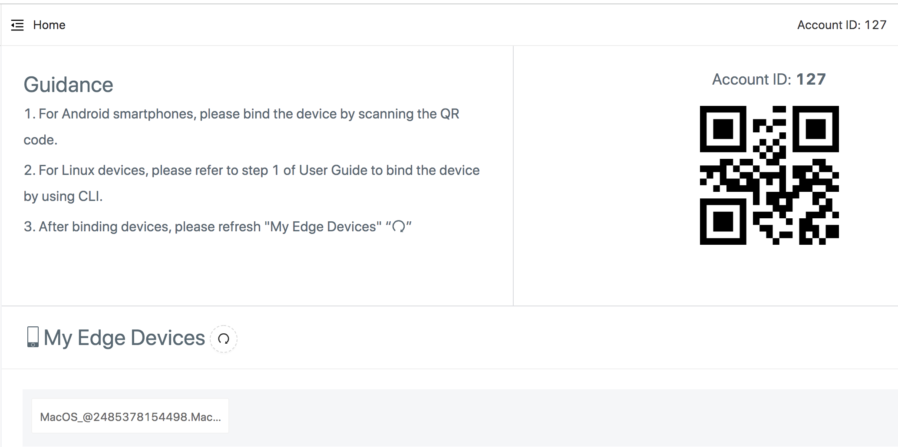
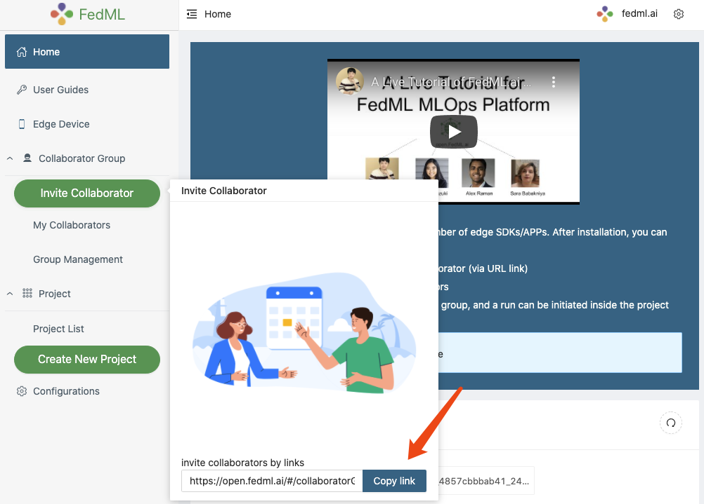
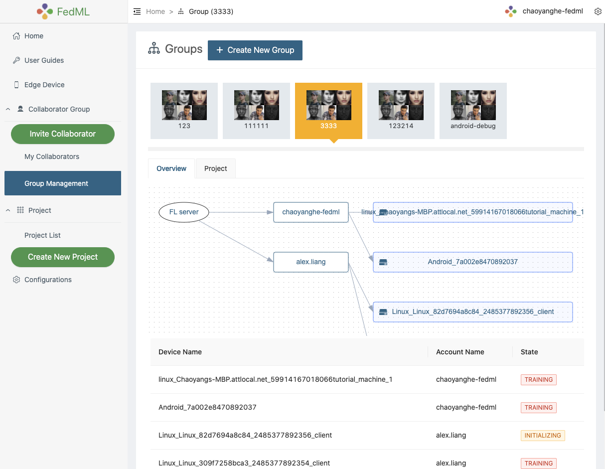
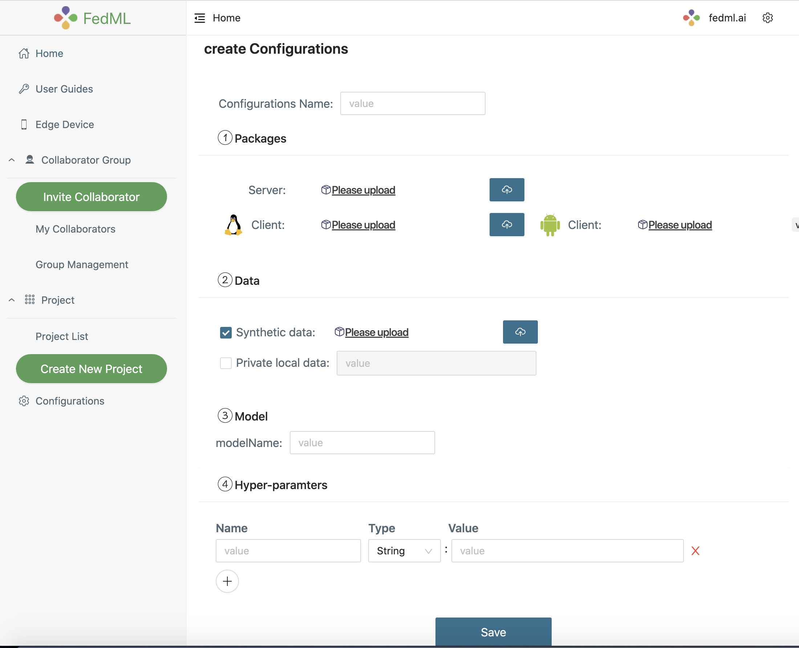

FedML MLOps User Guide¶
 Figure 1: the workflow that describes how our MLOps works
Figure 1: the workflow that describes how our MLOps works
The above figure shows the workflow. Such a workflow is handled by web UI without the need to handle complex deployment. Please follow the following instruction step by step.
1. Register an Account and Login
2. Invite Collaborators and group management
3. Project Management
1. Register an Account and Login¶
1.1 Register an Account at MLOps
https://open.fedml.ai/#/login?isRegister=true
1.2 Launch our pip daemon process for FL Client Agent and login it to the platform
fedml login $userid
Please change $userid to your own ID (see the screenshot shown below).
 Figure 2: login your edge devices to our platform
You will see the log as below if the script works.
(fedml-pip) ALEXQZLIANG-MB2:swap alexliang$ fedml login 105
Argument for account Id: 105
Argument for version: release
Namespace(type='login', user='105', version='release')
Current directory of client agent: /Users/alexliang/fedml-client
Namespace(account_id=105, cloud_region='', config_version='release', current_running_dir='/Users/alexliang/fedml-client', device_id='0x9801a7a55e85', log_file_dir='/Users/alexliang/fedml-client/fedml-logs', os_name='MacOS', type='login', user=105, version='dev')
login: unique_device_id = @0x9801a7a55e85.MacOS
login: edge_id = 140
Congratulations, you have logged into the FedML MLOps platform successfully!
Your device id is @0x9801a7a55e85.MacOS. You may review the device in the MLOps edge device list.
2. Invite Collaborators and group management¶
2.1 Invite Collaborators
(1) Copy your invitation link
(2) Send the invitation link to your collaborators via any communication tools e.g., Slack, Facebook Messenger, Email.
(3) Your collaborators can open the URL, and accept the invitation
Now you and your collaborators should be able to see each other on My Collaborators page.
 Figure 3: invite your collaborators
2.2 Group Management
After inviting your collaborators, you can Create New Group, input the group name, and select your collaborators into the group.
We support a topology visualization to assist you and your collaborators in checking all collaborative edge devices in that group.
Note that after creation, our platform will add newly bound devices from all members to the group. If you would like to change the members in this group, Please create a new group for it.
 Figure 4: showing the topology of the group
3. Project Management¶
Now let’s create a project and get training started!
Create a new project for a specific group or utilize the existing project you created before
Open a project and create a new run under the project, by clicking
Start, the run will get started.
 Figure 5: create and start a new run
Figure 5: create and start a new run
3.1 Edit Configuration (optional)¶
As your can see from Figure 5, you may not have configured your hyper-parameters. By click “create configurations”, you can customize your Configuration.
Or before starting the run, you can edit your configurations at Configurations -> New Configurations.
Note that we are working on a couple of default configurations. Later you can either pick the default ones or create your own.
 Figure 6: edit your configuration
3.2 Update the source code of Client and Server (Optional)¶
We also provide the flexibility for you to customize your training algorithm, model, data loader, etc. You can upload the source code in Server Package and Client Package.
After successfully updating the Server package, Model and Hyper-parameters will be auto-filled by parsing the Server package.
A tutorial about how to customize the package can be found at:
Update the Source Code for FL Client and Server
3.3 Data Management (synthetic data or private data)¶
Users can either use the synthetic data or your local private data.
Set the private data path Please change the data path if you prefer to use your local private data.
By default, the private data path is fedml_data under fedml_edge_deployment folder.
If you would like to set it to another path, please modify it on the configuration page.
The path value should be relative to the fedml_edge_deployment folder.
Upload synthetic data. Synthetic data can be used for geo-distributed training, meaning that we do not enable privacy-related functionality in such a setting. Our platform will split the data according to the client number and distribute the data partitions to each client.
4. Experiment Tracking¶
Now you are ready to start the training, enjoy! We provide the following experimental tracking abilities as follows.
monitoring device status and training progress
visualizing training results
visualizing system performance
distributed logging
model downloading
More advanced features will be supported soon. We appreciate your valuable feedback.